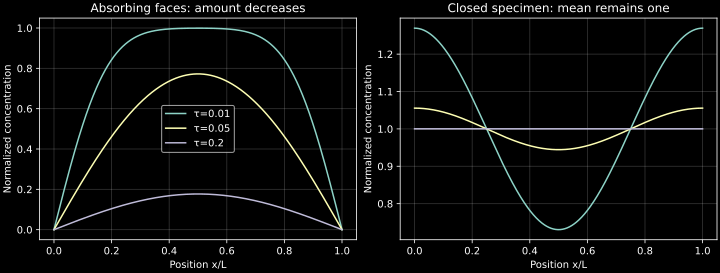

IIT Hyderabad · NPTEL · Independent study edition
Finite domains and reproducible diffusion computation
A finite specimen can become more uniform either by redistributing its solute internally or by losing solute through its surfaces. The concentration curves can look smoother in both cases. Their amount balances distinguish the processes, and the boundary conditions determine which calculation represents the experiment.
Source spine: L9's finite slab and homogenization modes, L10's related tutorial checks, and L11's Scilab plotting demonstrations. The explicit finite-difference solver, positivity argument, refinement experiment, and Python implementation are original teaching extensions. They are separate from evaluating an analytic profile in plotting software.
4.1 A finite slab with absorbing faces L9 00:20
Let a planar specimen occupy \(0<x<L\), with full thickness \(L>0\) in meters. Concentration \(c(x,t)\) is in mol/m³, time in seconds, and constant scalar diffusivity \(D>0\) is in m²/s. The initial interior concentration is uniform, \(c_0>0\). At positive time impose ideal absorbing faces: \(c(0,t)=c(L,t)=0\). The local equation remains \(\partial_tc=D\partial_{xx}c\).
An absorbing face means the environment removes solute quickly enough to maintain its prescribed zero concentration. A vacuum does not establish that idealization by itself: desorption or surface reactions may limit removal. The model also assumes lateral dimensions large enough that edge transport is negligible. At the two initial/boundary corners the uniform initial interior and suddenly zero surfaces are incompatible pointwise. The series solution will recover the initial state inside the open interval and in an integral sense, while satisfying the zero boundaries for positive time.
Seek a separated contribution \(c=X(x)T(t)\). On a region where neither factor vanishes, division gives \(T'/(DT)=X''/X\). The left side depends only on time and the right only on position, so both equal a separation constant. A nonzero spatial solution that vanishes at both ends requires a negative constant, written \(-k^2\). The spatial equation is \(X''+k^2X=0\), giving a sine plus cosine. The first boundary removes the cosine, and the second requires \(k=n\pi/L\) for positive integer \(n\).
The zero separation constant gives only the zero linear function under these boundaries. A positive separation constant gives hyperbolic functions whose two zero endpoints also force the zero solution. The nontrivial modes are therefore \(\sin(n\pi x/L)e^{-Dn^2\pi^2t/L^2}\). Each has the correct time sign: positive diffusivity makes it decay rather than grow.
Linearity permits a sum of these modes. Orthogonality on the interval gives \(\int_0^L\sin(n\pi x/L)\sin(m\pi x/L)dx=(L/2)\delta_{nm}\), where \(\delta_{nm}\) is one if the integer indices agree and zero otherwise. This follows by expressing the sine product as a difference of cosines and integrating. Multiplying the initial expansion by one sine and integrating selects its coefficient:
\[ a_n=\frac2L\int_0^L c_0\sin\!\left(\frac{n\pi x}{L}\right)dx =\frac{2c_0}{n\pi}[1-(-1)^n]. \tag{4.1} \]Even modes vanish; odd modes have coefficient \(4c_0/(n\pi)\). The resulting solution is
\[ \frac{c(x,t)}{c_0}=\frac4\pi\sum_{j=0}^\infty \frac{\sin[(2j+1)\pi x/L]}{2j+1} \exp\!\left[-\frac{(2j+1)^2\pi^2Dt}{L^2}\right]. \tag{4.2} \]At every positive time the exponential factors suppress high modes, permitting the needed termwise differentiation away from the initial limit. The index \(j\) is dimensionless; \(L\) is the full interval thickness. A formula written on a centered interval with half-thickness as its length parameter must be converted before comparing decay times. A factor-of-two length change becomes a factor of four in a diffusion time.
4.2 Mean amount and the long-time mode L9 16:57
Define the spatial mean \(\bar c(t)=L^{-1}\int_0^L c(x,t)dx\). This bar denotes a mean, not a Laplace transform. Integrating each odd sine gives \(2L/[(2j+1)\pi]\). Thus
\[ \frac{\bar c(t)}{c_0}=\frac8{\pi^2}\sum_{j=0}^\infty \frac{e^{-(2j+1)^2\pi^2Dt/L^2}}{(2j+1)^2}. \tag{4.3} \]The total amount per area is \(L\bar c\). It decreases toward zero because both boundaries are sinks. At long time the first mode dominates; its relaxation time is \(\tau_0=L^2/(\pi^2D)\). The next nonzero mode decays nine times faster. This separation of time scales explains the usefulness of a one-mode approximation after the initial transient.
The approximation needs a time criterion. Define dimensionless time \(\vartheta=Dt/L^2\). In the mean series, the omitted remainder relative to its first term is \(\sum_{j\geq1}(2j+1)^{-2}\exp(-[(2j+1)^2-1]\pi^2\vartheta)\). It is bounded above by \((\pi^2/8-1)e^{-8\pi^2\vartheta}\), since the odd reciprocal-square sum is \(\pi^2/8\). The sum identity also follows from (4.3) at its uniform initial integral limit. One can instead compare converged sums numerically without invoking that closed form.
At \(\vartheta=0.1\), the laboratory gives mean fraction 0.30211809 and first-mode fraction 0.30210560. The relative error against the full sum is approximately \(4.1370\times10^{-5}\). A short-time use of the same approximation would miss the many modes needed to represent nearly uniform concentration with thin depleted boundary layers.
Flux signs provide a second check. The signed left-face flux points toward decreasing \(x\); the signed right-face flux points toward increasing \(x\). Net outward rate per area is \(J(L,t)-J(0,t)\), not their signed sum. Differentiating (4.2) at both faces yields
\[ J(L,t)-J(0,t)=\frac{8Dc_0}{L} \sum_{j=0}^\infty e^{-(2j+1)^2\pi^2Dt/L^2} =-L\frac{d\bar c}{dt}. \tag{4.4} \]The final equality follows independently by differentiating the mean series. The code also checks it with a centered finite difference of the mean. At \(\vartheta=0.1\), the dimensionless outward rate in units \(Dc_0/L\) is 2.98277293. A negative amount derivative and positive outward loss are consistent descriptions of the same balance.
If both surfaces instead maintain the same nonzero concentration \(c_s\), subtract it first. The difference \(c-c_s\) has zero boundary values and initial value \(c_0-c_s\), so (4.2) applies to that difference. The final uniform concentration is \(c_s\), approached from above during desorption and from below during absorption. The reservoir can change specimen amount throughout that approach.
4.3 Closed homogenization preserves the mean L9 24:06
A composition modulation inside a closed specimen poses a different boundary problem. For a simple one-wavelength example, set \(c(x,0)=c_m+A_0\cos(2\pi x/L)\), with mean concentration \(c_m>0\) and amplitude \(|A_0|\leq c_m\). Its derivative vanishes at both faces, making it compatible with impermeable boundaries. The same function is also compatible with a periodic interval.
Substitution shows that the mean remains constant while the amplitude obeys \(dA/dt=-D(2\pi/L)^2A\). Therefore
\[ c(x,t)=c_m+A_0\cos(2\pi x/L)e^{-4\pi^2Dt/L^2}. \tag{4.5} \]The cosine integrates to zero, so the amount per area remains \(Lc_m\). More generally, a Fourier mode of wavenumber \(k\), in m⁻¹, decays at rate \(Dk^2\). If its wavelength is \(\lambda=2\pi/k\), its amplitude relaxation time is \(\lambda^2/(4\pi^2D)\). Finer composition variations smooth sooner at the same diffusivity.
The L11 slide at 22:00 labels an odd sine series of the form (4.2) a homogenization problem. That displayed formula has absorbing endpoints and loses its mean. It cannot describe closed-system homogenization to a nonzero mean. Equation (4.5) supplies a mass-conserving model of that physical question. The distinction is visible in Figure 4.1, not merely a change of terminology.

4.4 From a Scilab demonstration to a reproducible Python calculation L11 00:20
The source demonstration evaluates analytic expressions on arrays and plots the results. That is different from numerically integrating the diffusion PDE. Both can be useful, but they require different checks. An analytic profile implementation must preserve the formula, units, and source/boundary conditions. A PDE solver must additionally resolve spatial and temporal discretization errors and boundary updates.
Scilab's range construction corresponds to creating a NumPy position array. An elementwise square evaluates a function separately at each array coordinate; a matrix product computes a different operation. In Python, NumPy arrays use ** for elementwise powers, whereas ^ is not exponentiation. A loop over times should label the resulting curves by the physical time used in the formula, not merely the loop index. Curve labels and axis units are part of reproducibility.
The source Scilab code visible at L11 15:25 uses activation parameter \(Q=200000\) J/mol, prefactor \(D_0=10^{-5}\) m²/s, and gas constant \(R=8.314\) J/(mol·K). It converts Celsius to kelvin by adding 273.15 and days to seconds by multiplying by 86400. These displayed values resolve a caption ambiguity that reduced the activation value to 200. They are illustrative source-code inputs, not a verified diffusivity database for a named steel.
The Arrhenius expression is \(D=D_0e^{-Q/(RT)}\), with absolute temperature \(T\) in kelvin. Using the displayed inputs at 1000 °C gives \(T=1273.15\) K and \(D=6.2248442\times10^{-14}\) m²/s. For one day and depth 1 mm, the normalized maintained-source excess is approximately \(5.3180\times10^{-22}\). The small value is a consequence of these particular input parameters and threshold location; it is not evidence that diffusion has a sharp finite front.
The chapter program has no network access or external side effects when run without --figures; it returns a JSON record of model checks. With --figures, it writes the original SVG under figures/. The scientific inputs and assumptions are in the source. Its plotting routines evaluate the analytic solutions; its separate finite-difference routine advances a discretized PDE. The saved output makes those two computations distinguishable.
4.5 A conservative explicit diffusion update
As an original numerical extension, introduce equally spaced nodes \(x_i=i\Delta x\) and time levels \(t_n=n\Delta t\). Let \(u_i^n\) approximate concentration at that node and time. Here the integer \(n\) indexes time levels, not the spatial eigenmodes in (4.1). Approximate the face flux between neighboring nodes by \(J_{i+1/2}^n=-D(u_{i+1}^n-u_i^n)/\Delta x\).
An interior cell's accumulation is minus the difference of its two face fluxes divided by cell width. A forward time step therefore gives
\[ u_i^{n+1}=u_i^n+r(u_{i+1}^n-2u_i^n+u_{i-1}^n), \qquad r=\frac{D\Delta t}{\Delta x^2}. \tag{4.6} \]The mesh ratio \(r\) is dimensionless. Sharing one flux value at each face makes interior transfers cancel when cell balances are summed. This provides conservation for a finite-volume implementation with the appropriate boundary accounting. The laboratory uses fixed-value endpoint nodes, so a sum over interior nodes changes by the fluxes through its adjacent boundary faces; it does not claim that the absorbing specimen's amount stays constant.
Rearrange (4.6) as \(u_i^{n+1}=r u_{i-1}^n+(1-2r)u_i^n+r u_{i+1}^n\). When \(0\leq r\leq1/2\), these weights are nonnegative and sum to one. Each interior update is a convex average, so it stays between the previous neighboring minimum and maximum. Nonnegative initial data remain nonnegative if the boundary updates also preserve nonnegativity. A boundary algorithm that injects a negative concentration can break that property even when the interior ratio is valid.
The upper bound is necessary for this interior positivity property over arbitrary nonnegative data. Set a selected interior value to one and its neighbors to zero. The new central value is \(1-2r\), negative if \(r>1/2\). At \(r=0.6\) it becomes \(-0.2\). This counterexample is more informative than interpreting any one apparently smooth unstable run as evidence that the time step is safe.
A Fourier check gives the related stability mechanism. For a periodic spatial mode \(u_i^n=G^n e^{\mathrm i i\kappa}\), where \(\mathrm i^2=-1\) and \(\kappa\) is the dimensionless phase increment, substitution yields \(G=1-4r\sin^2(\kappa/2)\). All modes in the continuum phase range have \(|G|\leq1\) exactly for \(0\leq r\leq1/2\). At the upper endpoint the alternating mode has \(G=-1\) and does not decay. Thus this limiting stability bound does not promise faithful damping of the shortest resolved wavelengths.
A fixed finite Dirichlet grid samples a restricted eigenmode set and can have a slightly different sharp spectral bound. The convex-averaging limit remains a simple uniform positivity condition. We do not transfer the Fourier formula to arbitrary irregular grids, nonlinear coefficients, or complicated boundary updates. Those models require their own discrete operators and checks.
4.6 Check a solver by refinement against an exact mode
Use dimensionless position \(X=x/L\) and time \(\vartheta=Dt/L^2\). The smooth initial profile \(u(X,0)=\sin\pi X\) is compatible with zero concentration at both ends. Its exact solution is \(u=\sin\pi X\,e^{-\pi^2\vartheta}\). This removes the initial corner discontinuity of the uniform absorbing slab and isolates a clean spatial/time accuracy test.
On a grid with \(N\) equal intervals, the sampled sine is also an exact eigenvector of the discrete update. Its per-step amplification is \(G_N=1-4r\sin^2[\pi/(2N)]\). After \(m\) time steps its numerical amplitude is \(G_N^m\). This supplies an independent algebraic check on the implementation, beyond comparing two numerical solvers that might share the same error.
At fixed \(r\) and final dimensionless time, \(m\) scales like \(N^2\). Expanding the sine and \(\ln G_N\) shows that the accumulated exponent differs from \(-\pi^2\vartheta\) by order \(N^{-2}\). Halving grid spacing should therefore reduce the error by approximately four for this smooth single-mode test, away from accidental cancellation in the error coefficient.
The actual run uses \(r=0.4\), final \(\vartheta=0.05\), and 40, 80, and 160 intervals. Maximum errors are approximately \(2.1703351\times10^{-4}\), \(5.4216574\times10^{-5}\), and \(1.3551534\times10^{-5}\). Consecutive ratios are 4.00308 and 4.00077. These are executed numerical checks of the stated scheme and mode, not a proof of accuracy for every initial state or boundary condition.
The cost consequence is immediate. Doubling resolution in one dimension doubles the number of nodes and requires roughly four times as many explicit steps for the same physical time. The arithmetic work therefore grows by roughly eight in this simple implementation. An implicit method can change the stability restriction, but then requires solving a coupled linear system and still needs an accuracy study. Stability, accuracy, conservation, and cost are separate design questions.
4.7 Exercises with worked solutions
1. Derive the odd-mode coefficients
A slab initially has uniform concentration \(c_0\), while both surfaces maintain \(c_s\) for positive time. Derive the coefficients for the difference from the final state. State the full-thickness convention and explain the initial corner mismatch.
Worked solution
Let \(v=c-c_s\). Its endpoints vanish and its initial interior value is \(c_0-c_s\). Orthogonality on \([0,L]\) gives \(a_n=(2/L)(c_0-c_s)\int_0^L\sin(n\pi x/L)dx=2(c_0-c_s)[1-(-1)^n]/(n\pi)\). Only odd modes remain. Here \(L\) is the full thickness; the slowest decay time is \(L^2/(\pi^2D)\). The initial interior limit can be uniform even though the positive-time boundary values differ at the two endpoints. Pointwise equality at those corners is not claimed; interior and integral initial convergence are the appropriate statements.
2. Relate mean loss to signed face fluxes
Derive (4.4) directly from conservation. For an initially loaded absorbing slab, state the signs of the two Cartesian face fluxes and explain why their signed sum is the wrong measure of total loss.
Worked solution
Integrating \(\partial_tc=-\partial_xJ\) across the specimen gives \(L\,d\bar c/dt=J(0,t)-J(L,t)\). Thus outward loss is \(J(L,t)-J(0,t)\). Near the left face concentration increases with \(x\), so \(J(0,t)<0\); near the right face it decreases, so \(J(L,t)>0\). Symmetry makes their signed sum zero even though both faces lose solute. The outward normals have opposite directions, so their outward contributions add as magnitudes in this symmetric desorption problem. The mean series derivative and profile-gradient calculation give the same positive rate.
3. Diagnose an incorrectly labeled homogenization plot
A program evaluates the odd sine series (4.2) and calls the result closed-system homogenization. Identify two checks that reveal the mismatch. Give a compatible alternative model with a nonzero conserved mean.
Worked solution
The series forces zero concentration at both endpoints for positive time, which is an absorbing Dirichlet condition, not impermeability. Its integral from (4.3) decreases to zero, contradicting conservation of nonzero initial amount in a closed specimen. The alternative (4.5) has zero derivatives at the faces and integral \(Lc_m\) at every time. Its cosine amplitude decays while its mean survives. A graph becoming flatter is insufficient to distinguish loss from internal redistribution; check the boundary data and integrated amount.
4. Find a positivity failure before running a long simulation
Show that (4.6) maps every nonnegative interior data vector to nonnegative values when \(0\leq r\leq1/2\), assuming nonnegative boundary values. Construct a counterexample at \(r=0.6\). Does this positivity result alone establish accurate diffusion?
Worked solution
The update weights are \((r,1-2r,r)\). In the stated range they are nonnegative and sum to one, so each new value is a convex average of nonnegative neighbors. At \(r=0.6\), a nonnegative unit spike surrounded by zeros gives central value \(1-1.2=-0.2\). This one-step counterexample is independent of long-time visual appearance. Positivity does not establish accuracy: a stable but coarse grid can damp a concentration pattern at the wrong rate, and the limiting alternating mode at \(r=1/2\) is not damped at all. Refinement against a known solution addresses that separate question.
5. Predict the discrete single-mode solution
For nodes \(i=0,\ldots,N\) with zero endpoints, insert \(u_i=\sin(\pi i/N)\) into the explicit update. Derive its amplitude after \(m\) steps and explain how it checks the implementation independently of the continuum solution.
Worked solution
The sine-addition identity gives \(u_{i+1}+u_{i-1}=2\cos(\pi/N)u_i\). Therefore one step multiplies the vector by \(1+2r[\cos(\pi/N)-1]=1-4r\sin^2[\pi/(2N)]\). After \(m\) steps the factor is its \(m\)th power. The program compares its time-stepped array with this discrete exact result, detecting indexing, in-place-update, or step-count errors. Comparing that amplitude with \(e^{-\pi^2\vartheta}\) then tests discretization error. The two checks isolate implementation from approximation.
6. Design a reproducibility and cost check
Specify a compact check of a Python counterpart to the source plotting demonstration. Include units, a boundary-value check, and a numerical-refinement test if a PDE solver is added. Explain the cost of doubling resolution for the explicit one-dimensional scheme.
Worked solution
Record the concentration convention, \(D_0,Q,R\) with consistent units, absolute temperature, elapsed seconds, domain, initial concentration, and surface condition. Convert Celsius and days explicitly. Evaluate the analytic maintained-source profile at the surface and far into the solid; it must approach the specified values. Check that its integrated uptake equals time-integrated surface flux. For an added PDE solver, use a compatible exact sine mode, keep the mesh ratio fixed, and compare errors after each grid refinement. The executed errors here decrease by roughly four when spacing halves. Doubling node count requires roughly four times as many explicit steps at the same final time, giving roughly eight times the work in this implementation. These are arithmetic scaling estimates, not measured universal wall times.
4.8 Sources, visual checks, and limits
L9 supplies the finite-slab and modulation source spine; L10 supplies supporting tutorial checks, including the steady flux whose distinction from transient uptake is developed in Chapters 1 and 3; L11 supplies the Scilab demonstration. Selected 720p source frames verify the first-mode loss formula (L9 22:03), the displayed Scilab constants and conversions (L11 15:25), and the boundary-condition mismatch on the slide labeled homogenization (L11 22:00). This is a bounded visual inspection, not a complete audiovisual audit.
The series assume a fixed planar specimen, constant scalar diffusivity, and the stated ideal boundary conditions. Numerical verification concerns the specified explicit scheme and smooth test mode. It does not certify an industrial heat treatment or a proprietary software simulation. Closed homogenization, absorbing degassing, and maintained-surface uptake retain separate amount balances throughout the notes. Crystal geometry and atomic defects next explain which microscopic paths can produce the continuum rates used so far.
Python laboratory
Run code/ch04.py. Inputs and scientific limits are specified in the chapter and program.
Complete runnable source
"""Finite-slab modes, source parameters, and numerical refinement checks."""
import argparse
import json
from pathlib import Path
import numpy as np
from scipy.special import erfc
def absorbing_profile(x, tau, terms=100):
odd = np.arange(1, 2 * terms, 2, dtype=float)
return np.sum(
4
/ (np.pi * odd[:, None])
* np.sin(np.pi * odd[:, None] * x[None, :])
* np.exp(-(np.pi**2) * odd[:, None] ** 2 * tau),
axis=0,
)
def finite_difference(cells, final_tau, ratio=0.4):
if cells < 3 or not 0 < ratio <= 0.5 or final_tau <= 0:
raise ValueError("Invalid grid, time, or explicit mesh ratio")
x = np.linspace(0, 1, cells + 1)
dx = 1 / cells
steps = int(np.ceil(final_tau / (ratio * dx * dx)))
dtau = final_tau / steps
r = dtau / (dx * dx)
u = np.sin(np.pi * x)
u[[0, -1]] = 0
for _ in range(steps):
old = u.copy()
u[1:-1] = old[1:-1] + r * (old[2:] - 2 * old[1:-1] + old[:-2])
assert np.min(u) >= -1e-14
exact = np.sin(np.pi * x) * np.exp(-(np.pi**2) * final_tau)
amplification = 1 - 4 * r * np.sin(np.pi / (2 * cells)) ** 2
discrete_exact = np.sin(np.pi * x) * amplification**steps
assert np.max(np.abs(u - discrete_exact)) < 1e-12
return dict(
cells=cells,
steps=steps,
actual_ratio=r,
max_error=float(np.max(np.abs(u - exact))),
)
def run():
odd = np.arange(1, 401, 2, dtype=float)
tau = 0.1
mean = np.sum(8 / (np.pi**2 * odd**2) * np.exp(-(odd**2) * np.pi**2 * tau))
first_mean = 8 / np.pi**2 * np.exp(-(np.pi**2) * tau)
outward = 8 * np.sum(np.exp(-(odd**2) * np.pi**2 * tau))
eps = 1e-6
def slab_mean(time):
return np.sum(
8 / (np.pi**2 * odd**2) * np.exp(-(odd**2) * np.pi**2 * time)
)
derivative = (slab_mean(tau + eps) - slab_mean(tau - eps)) / (2 * eps)
assert abs(derivative + outward) < 1e-8
x = np.linspace(0, 1, 10001)
closed = 1 + 0.4 * np.cos(2 * np.pi * x) * np.exp(-4 * np.pi**2 * tau)
assert abs(np.trapezoid(closed, x) - 1) < 1e-12
refinements = [finite_difference(n, 0.05) for n in (40, 80, 160)]
ratios = [
refinements[i]["max_error"] / refinements[i + 1]["max_error"]
for i in range(2)
]
assert all(3.8 < value < 4.2 for value in ratios)
# An unstable update makes a nonnegative spike negative for r>1/2.
invalid = 1 - 2 * 0.6
assert invalid < 0
# Visually checked source Scilab inputs; not measured steel data.
Q, D0, gas_constant = 200000.0, 1e-5, 8.314
T_C, days = 1000.0, 1.0
T_K, seconds = T_C + 273.15, days * 86400
source_D = D0 * np.exp(-Q / (gas_constant * T_K))
incorrect_D = D0 * np.exp(-200 / (gas_constant * T_K))
normalized_at_1mm = erfc(1e-3 / (2 * np.sqrt(source_D * seconds)))
return dict(
absorbing_mean_at_tau_point1=float(mean),
first_mode_mean_at_tau_point1=float(first_mean),
first_mode_relative_error=float((mean - first_mean) / mean),
outward_flux_in_Dc0_per_L_units=float(outward),
closed_mean=1.0,
refinements=refinements,
error_ratios=ratios,
unstable_spike_center=invalid,
illustrative_source_parameters=dict(
Q_J_per_mol=Q,
D0_m2_per_s=D0,
R_J_per_mol_K=gas_constant,
T_C=T_C,
T_K=T_K,
days=days,
),
illustrative_source_D_m2_per_s=float(source_D),
activation_unit_error_multiplier=float(incorrect_D / source_D),
illustrative_normalized_1mm_profile=float(normalized_at_1mm),
)
def figures():
import matplotlib
matplotlib.use("Agg")
matplotlib.rcParams["svg.hashsalt"] = "ch04"
import matplotlib.pyplot as plt
root = Path(__file__).resolve().parents[1]
plt.style.use("dark_background")
fig, axes = plt.subplots(1, 2, figsize=(10, 3.8), constrained_layout=True)
x = np.linspace(0, 1, 501)
for tau in (0.01, 0.05, 0.2):
axes[0].plot(x, absorbing_profile(x, tau), label=f"τ={tau:g}")
axes[1].plot(
x, 1 + 0.4 * np.cos(2 * np.pi * x) * np.exp(-4 * np.pi**2 * tau)
)
for axis in axes:
axis.set_xlabel("Position x/L")
axis.set_ylabel("Normalized concentration")
axis.grid(alpha=0.2)
axes[0].set_title("Absorbing faces: amount decreases")
axes[1].set_title("Closed specimen: mean remains one")
axes[0].legend()
(root / "figures").mkdir(exist_ok=True)
fig.savefig(
root / "figures/ch04-boundary-models.svg", metadata={"Date": None}
)
plt.close(fig)
if __name__ == "__main__":
parser = argparse.ArgumentParser()
parser.add_argument("--figures", action="store_true")
args = parser.parse_args()
print(json.dumps(run(), indent=2))
if args.figures:
figures()
Recorded execution output
{
"absorbing_mean_at_tau_point1": 0.30211809377327326,
"first_mode_mean_at_tau_point1": 0.3021055950832642,
"first_mode_relative_error": 4.137021339230699e-05,
"outward_flux_in_Dc0_per_L_units": 2.982772925059304,
"closed_mean": 1.0,
"refinements": [
{
"cells": 40,
"steps": 200,
"actual_ratio": 0.3999999999999999,
"max_error": 0.000217033513196907
},
{
"cells": 80,
"steps": 800,
"actual_ratio": 0.3999999999999999,
"max_error": 5.42165743065981e-05
},
{
"cells": 160,
"steps": 3200,
"actual_ratio": 0.3999999999999999,
"max_error": 1.3551533839195606e-05
}
],
"error_ratios": [
4.0030842223554925,
4.000770315001943
],
"unstable_spike_center": -0.19999999999999996,
"illustrative_source_parameters": {
"Q_J_per_mol": 200000.0,
"D0_m2_per_s": 1e-05,
"R_J_per_mol_K": 8.314,
"T_C": 1000.0,
"T_K": 1273.15,
"days": 1.0
},
"illustrative_source_D_m2_per_s": 6.224844244642626e-14,
"activation_unit_error_multiplier": 157639714.37907174,
"illustrative_normalized_1mm_profile": 5.317960140531607e-22
}